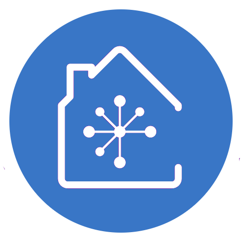

<ion-header [translucent]="true" mode="ios">
  <ion-toolbar>
    <div class="icon">
      
      <h1>Domestic<span>App</span></h1>
    </div>

    <!-- <shared-icono-notificacion></shared-icono-notificacion> -->
  </ion-toolbar>
</ion-header>
